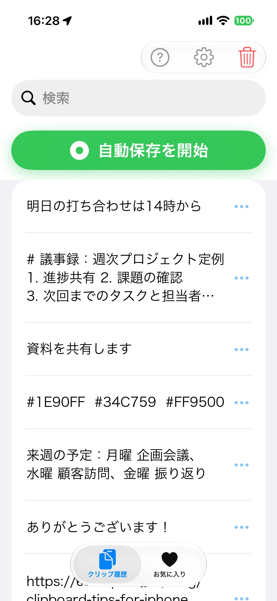

Sugata38 Studio
clipboood
コピー履歴を自動保存するクリップボード管理アプリ。大事なテキストをもう失いません。
自動保存
: ほかのアプリを使っている間も、コピーしたテキストを自動で記録。
素早い検索
: 過去にコピーした履歴から、必要な情報をすぐに見つけ出せます。
プライバシー第一
: コピーした内容はお使いの端末内にだけ保存され、外部に送信されることはありません。
App Storeで見る
プライバシーポリシー / Privacy Policy
